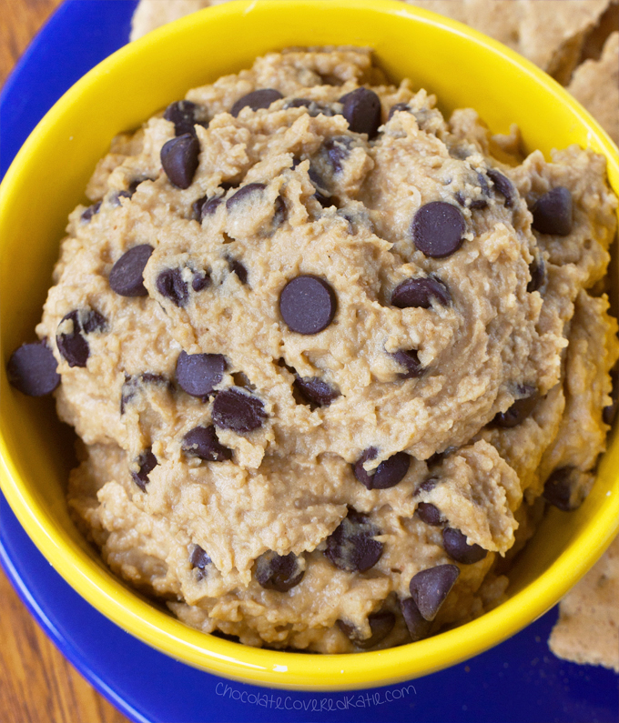

Chickpea Cookie Dough Dip

Description
No more guilty nights sobbing over cookie dough, wondering if you'll die of salmonella! As far as desserts go there aren't many that can replace the nostalgic warm fuzzy glow of a solid chocolate chip cookie. Except eating the dough before ever getting to the baking step, which is the whole point of this recipe. Plus it's healthier (and less of a gamble) than eating actual raw cookie dough.
Ingredients for chickpea cookie dough dip
- 1 1/2 cups chickpeas
- 1/8 tsp salt
- 1/8 tsp baking soda
- 2 tsp pure vanilla extract
- 1/4 cup nut butter of choice
- up to 1/4 cup milk of choice, only if needed
- Sweetener (2/3 cup brown sugar, or 3 - 4 tbsp of pure maple syrup)
- 1/3 cup choclate chips
- 2 - 4 tbsp oats, flaxmeal, or almond flour (to thicken)
Steps
- Combine all ingredients except the chocolate chips in a food processor, and blend until completely smooth.
- Stir in the chocolate-chips, then serve with your delivery-vehicle of choice (e.g., graham crackers, other cookies, there's no judgment here).